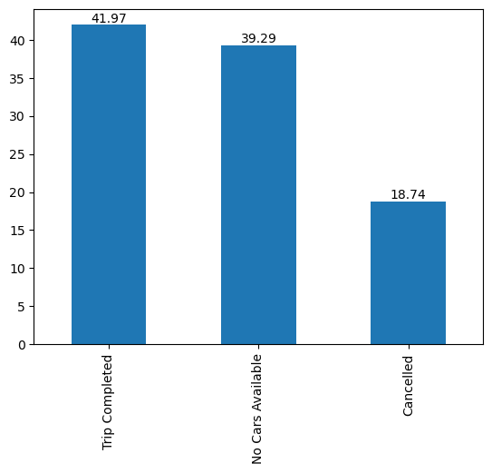
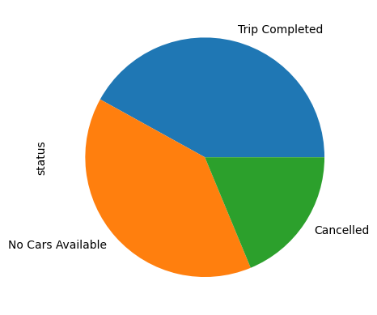
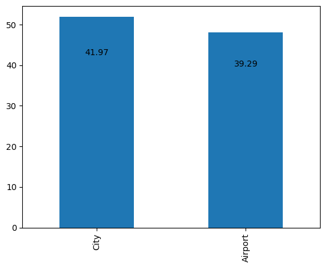
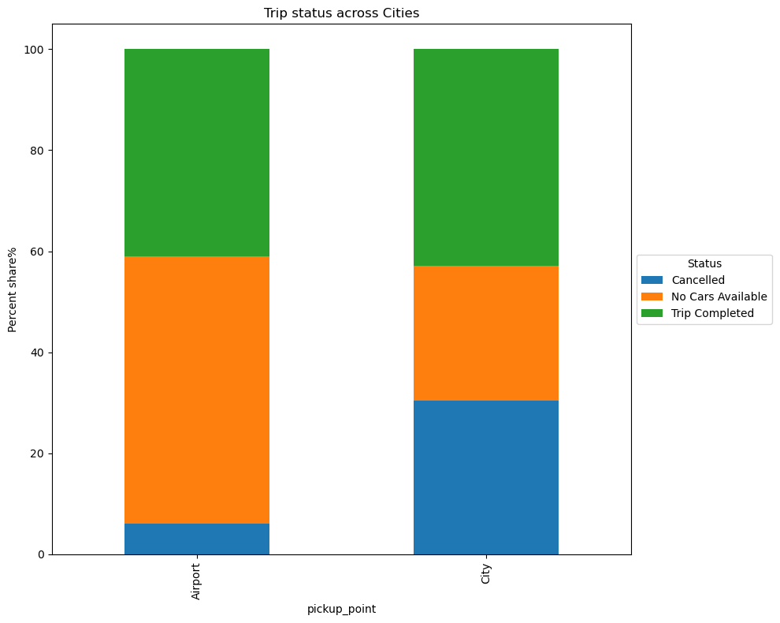
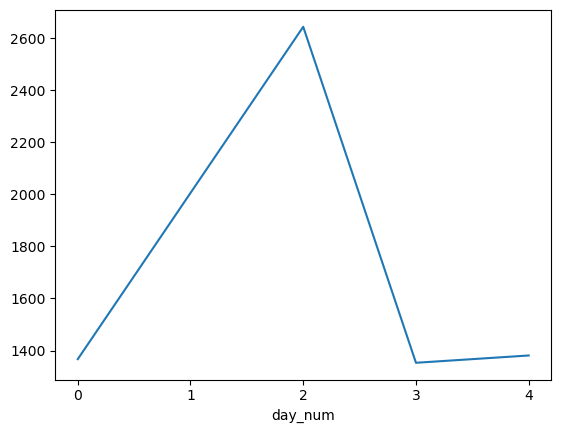

Eda
Contents
import pandas as pd
import numpy as np
import matplotlib.pyplot as plt
import seaborn as sns
url = 'https://raw.githubusercontent.com/vkoul/data/main/misc/ride_data.csv'
df = pd.read_csv(url, parse_dates = ['Request timestamp', 'Drop timestamp'])
df.info()
<class 'pandas.core.frame.DataFrame'>
RangeIndex: 6745 entries, 0 to 6744
Data columns (total 6 columns):
# Column Non-Null Count Dtype
--- ------ -------------- -----
0 Request id 6745 non-null int64
1 Pickup point 6745 non-null object
2 Driver id 4095 non-null float64
3 Status 6745 non-null object
4 Request timestamp 6745 non-null datetime64[ns]
5 Drop timestamp 2831 non-null datetime64[ns]
dtypes: datetime64[ns](2), float64(1), int64(1), object(2)
memory usage: 316.3+ KB
df.head()
| Request id | Pickup point | Driver id | Status | Request timestamp | Drop timestamp | |
|---|---|---|---|---|---|---|
| 0 | 1 | Airport | 285.0 | Trip Completed | 2016-11-07 00:20:00 | 2016-11-07 00:51:00 |
| 1 | 2 | Airport | NaN | No Cars Available | 2016-11-07 00:23:00 | NaT |
| 2 | 3 | Airport | 80.0 | Trip Completed | 2016-11-07 00:24:00 | 2016-11-07 01:31:00 |
| 3 | 4 | City | NaN | No Cars Available | 2016-11-07 00:37:00 | NaT |
| 4 | 5 | Airport | 264.0 | Trip Completed | 2016-11-07 00:36:00 | 2016-11-07 01:35:00 |
df['time_diff'] = df['Drop timestamp'] - df["Request timestamp"]
df.head()
| Request id | Pickup point | Driver id | Status | Request timestamp | Drop timestamp | time_diff | |
|---|---|---|---|---|---|---|---|
| 0 | 1 | Airport | 285.0 | Trip Completed | 2016-11-07 00:20:00 | 2016-11-07 00:51:00 | 0 days 00:31:00 |
| 1 | 2 | Airport | NaN | No Cars Available | 2016-11-07 00:23:00 | NaT | NaT |
| 2 | 3 | Airport | 80.0 | Trip Completed | 2016-11-07 00:24:00 | 2016-11-07 01:31:00 | 0 days 01:07:00 |
| 3 | 4 | City | NaN | No Cars Available | 2016-11-07 00:37:00 | NaT | NaT |
| 4 | 5 | Airport | 264.0 | Trip Completed | 2016-11-07 00:36:00 | 2016-11-07 01:35:00 | 0 days 00:59:00 |
df["time_diff"] = df["time_diff"].astype('timedelta64[m]')
df.head()
| Request id | Pickup point | Driver id | Status | Request timestamp | Drop timestamp | time_diff | |
|---|---|---|---|---|---|---|---|
| 0 | 1 | Airport | 285.0 | Trip Completed | 2016-11-07 00:20:00 | 2016-11-07 00:51:00 | 31.0 |
| 1 | 2 | Airport | NaN | No Cars Available | 2016-11-07 00:23:00 | NaT | NaN |
| 2 | 3 | Airport | 80.0 | Trip Completed | 2016-11-07 00:24:00 | 2016-11-07 01:31:00 | 67.0 |
| 3 | 4 | City | NaN | No Cars Available | 2016-11-07 00:37:00 | NaT | NaN |
| 4 | 5 | Airport | 264.0 | Trip Completed | 2016-11-07 00:36:00 | 2016-11-07 01:35:00 | 59.0 |
## missing values
df.isna().mean().round(2)
Request id 0.00
Pickup point 0.00
Driver id 0.39
Status 0.00
Request timestamp 0.00
Drop timestamp 0.58
time_diff 0.58
dtype: float64
df.columns = df.columns.str.lower()
df.columns = df.columns.str.replace(" ", "_")
df.columns
Index(['request_id', 'pickup_point', 'driver_id', 'status',
'request_timestamp', 'drop_timestamp', 'time_diff'],
dtype='object')
df.head()
| request_id | pickup_point | driver_id | status | request_timestamp | drop_timestamp | time_diff | |
|---|---|---|---|---|---|---|---|
| 0 | 1 | Airport | 285.0 | Trip Completed | 2016-11-07 00:20:00 | 2016-11-07 00:51:00 | 31.0 |
| 1 | 2 | Airport | NaN | No Cars Available | 2016-11-07 00:23:00 | NaT | NaN |
| 2 | 3 | Airport | 80.0 | Trip Completed | 2016-11-07 00:24:00 | 2016-11-07 01:31:00 | 67.0 |
| 3 | 4 | City | NaN | No Cars Available | 2016-11-07 00:37:00 | NaT | NaN |
| 4 | 5 | Airport | 264.0 | Trip Completed | 2016-11-07 00:36:00 | 2016-11-07 01:35:00 | 59.0 |
Eda#
ax = df['status'].value_counts(normalize = True).multiply(100).round(2).plot(kind = 'bar');
ax.bar_label(ax.containers[0]);

df['status'].value_counts(normalize = True).multiply(100).round(2).plot(kind = 'pie');

ax1 = df['pickup_point'].value_counts(normalize = True).multiply(100).round(2).plot(kind = 'bar');
ax1.bar_label(ax.containers[0]);

(df.groupby('pickup_point')['status'].value_counts(normalize=True)
.unstack('status')
.fillna(0).round(3).multiply(100)
.plot.bar(stacked=True, title = "Trip status across Cities", figsize=(10, 8), ylabel = "Percent share%")
.legend(loc='center left',bbox_to_anchor=(1.0, 0.5), title = "Status")
);
plt.tight_layout()
plt.savefig("stacked_chart1.png", dpi = 400)

df['day_num'] = df['request_timestamp'].dt.weekday
df['weekday'] = df['request_timestamp'].dt.day_name()
df.head()
| request_id | pickup_point | driver_id | status | request_timestamp | drop_timestamp | time_diff | day_num | weekday | |
|---|---|---|---|---|---|---|---|---|---|
| 0 | 1 | Airport | 285.0 | Trip Completed | 2016-11-07 00:20:00 | 2016-11-07 00:51:00 | 31.0 | 0 | Monday |
| 1 | 2 | Airport | NaN | No Cars Available | 2016-11-07 00:23:00 | NaT | NaN | 0 | Monday |
| 2 | 3 | Airport | 80.0 | Trip Completed | 2016-11-07 00:24:00 | 2016-11-07 01:31:00 | 67.0 | 0 | Monday |
| 3 | 4 | City | NaN | No Cars Available | 2016-11-07 00:37:00 | NaT | NaN | 0 | Monday |
| 4 | 5 | Airport | 264.0 | Trip Completed | 2016-11-07 00:36:00 | 2016-11-07 01:35:00 | 59.0 | 0 | Monday |
df['day_num'].unique()
array([0, 2, 3, 4], dtype=int64)
df.groupby('day_num')['request_id'].count().plot(kind = 'line', subplots = True);
plt.xticks([0,1,2,3,4]);
